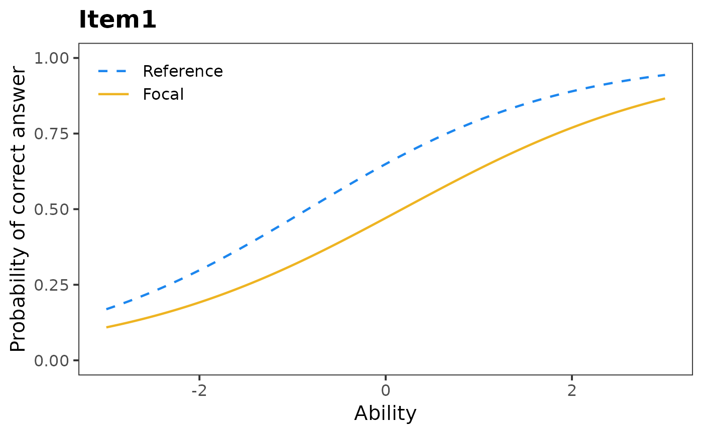
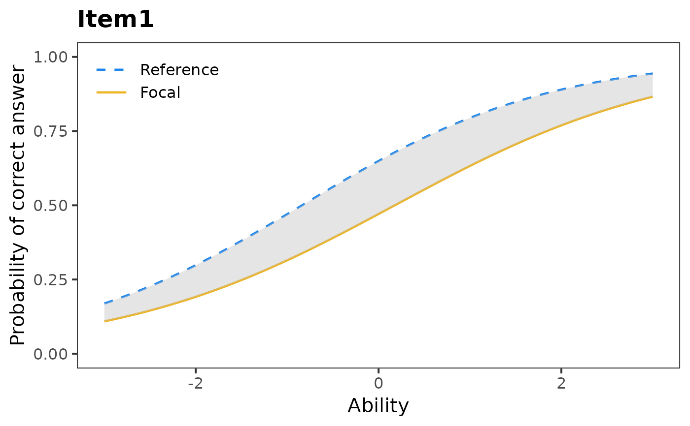

Plots characteristic curve of IRT model.
Arguments
- parameters
numeric: data matrix or data frame. See Details.
- test
character: type of statistic to be shown. See Details.
- item
either character ("all"), or numeric vector, or single number corresponding to column indicators. See Details.
- item.name
character: the name of item.
- same.scale
logical: are the item
parameterson the same scale? (default is "FALSE"). See Details.
Details
This function plots characteristic curve of DIF IRT model.
The parameters matrix has a number of rows equal to twice the number
of items in the data set. The first J rows refer to the item parameter
estimates in the reference group, while the last J ones correspond to the
same items in the focal group. The number of columns depends on the selected
IRT model: 2 for the 1PL model, 5 for the 2PL model, 6 for the constrained
3PL model and 9 for the unconstrained 3PL model. The columns of
irtParam() have to follow the same structure as the output of
itemParEst(), difLord() or difRaju() command from the
difR package.
Two possible type of test statistics can be visualized - "Lord"
gives only characteristic curves, "Raju" also highlights area between
these curves.
For default option "all", all characteristic curves are plotted.
Author
Adela Hladka
Institute of Computer Science of the Czech Academy of Sciences
hladka@cs.cas.cz
Patricia Martinkova
Institute of Computer Science of the Czech Academy of
Sciences
martinkova@cs.cas.cz
Examples
# loading libraries
library(difR)
library(ltm)
#> Loading required package: MASS
#> Loading required package: msm
#> Loading required package: polycor
#>
#> Attaching package: ‘ltm’
#> The following object is masked _by_ ‘.GlobalEnv’:
#>
#> Science
#> The following object is masked from ‘package:mirt’:
#>
#> Science
# loading data based on GMAT2
data(GMAT2, package = "difNLR")
# Estimation of 2PL IRT model and Lord's statistic
# by difR package
fitLord <- difLord(GMAT2, group = 21, focal.name = 1, model = "2PL")
# plot of item 1 and Lord's statistic
plotDIFirt(fitLord$itemParInit, item = 1)
#> [[1]]

#>
# Estimation of 2PL IRT model and Raju's statistic
# by difR package
fitRaju <- difRaju(GMAT2, group = 21, focal.name = 1, model = "2PL")
# plot of item 1 and Lord's statistic
plotDIFirt(fitRaju$itemParInit, test = "Raju", item = 1)
#> [[1]]

#>